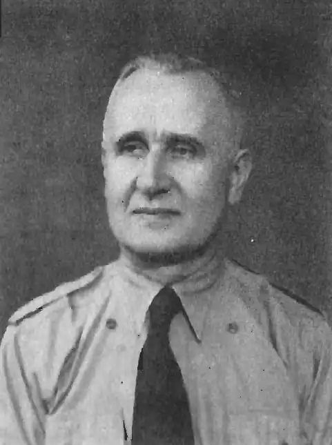
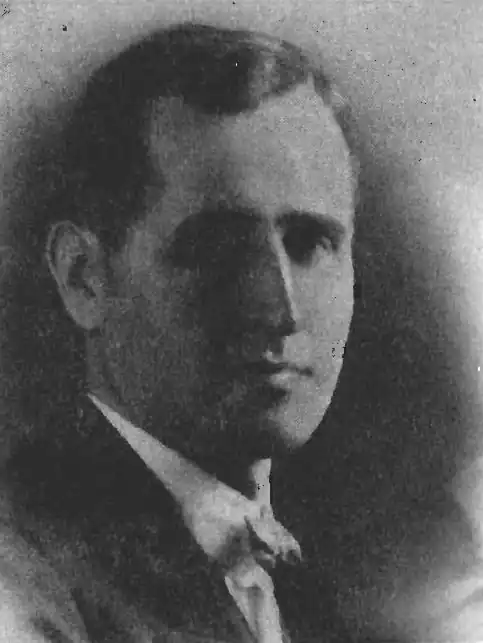
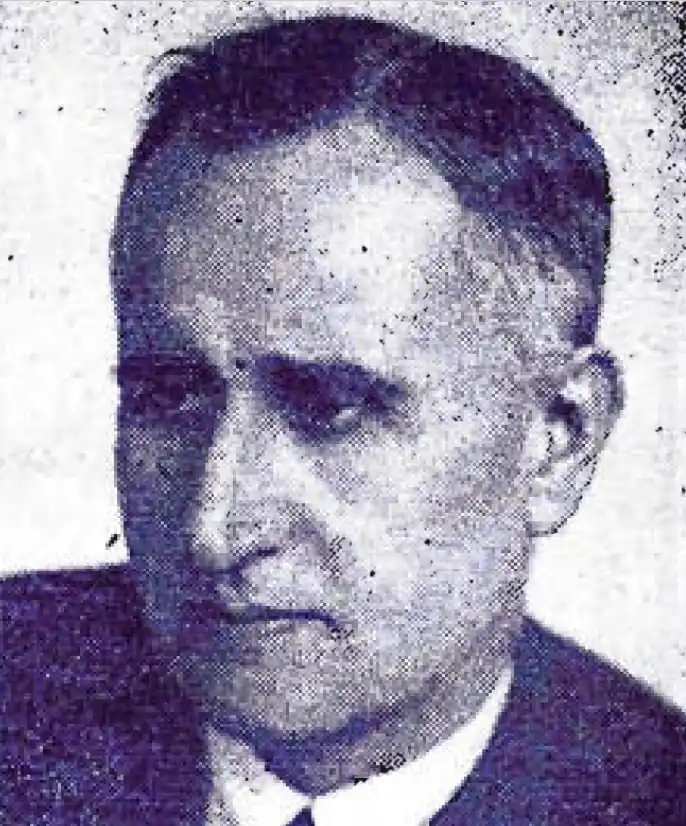

Народився Петро Шкурат 16 жовтня 1893 р. у містечку Келеберда біля Кременчука (тепер село в Кременчуцькому р-ні Полтавської обл.). Подробиці дитинства та молодості наразі не встановлені. Відомо, що на канікули приїжджав в с. Переволочну над Дніпром (тепер затоплене Дніпродзержинським водосховищем), де дідусь розповідав йому легенди й перекази про козаків та їх боротьбу з Росією. Є вказівки, що навчався на медика – можливо, у фельдшерській школі.
Під час Першої світової війни Шкурат служив у царській армії. Зокрема, навесні 1917 р. перебував на російсько-австрійському фронті в Галичині, в околиці м. Підгайці і с. Шумляни.
В 1918 р. тривалий час працював в українських установах м. Генічеськ (тепер Херсонська обл.). В січні 1919 р. в складі Полтавського полку брав участь в боях проти махновців та більшовиків на Катеринославщині та Харківщині, зокрема, в околицях м. Лозова. За участь у збройній боротьбі за державність України нагороджений Хрестом Симона Петлюри. Захворівши на поворотний тиф, Шкурат довго лікувався. В липні 1919 р. шпиталь у Тернополі, де він перебував, опинився на території, окупованій поляками. Від серпня 1919 р. до вересня 1920 р. Шкурат перебував в таборі для інтернованих та полонених українців на Ялівці у Львові. Після звільнення як медик за фахом за допомогою Надзвичайного комісаріату по боротьбі з епідемією тифу був скерований на посаду помічника повітого лікаря в м. Ярослав (тепер Польща). Тут працював у 1921–1924 рр. Згодом П. Шкурат перебрався до Перемишля, де мешкав аж до 1944 р., працюючи продавцем в книгарні "Базар", а відтак управителем книгарні Наукового товариства ім. Т. Шевченка. Брав активну участь в житті української громади Перемишля, а також наддніпрянської еміграції у Польщі, яка об'єднувалася в Український центральний комітет (УЦК). Організатор і секретар комітету "Брат – братові", створеного у Перемишлі 1921 р. з метою допомоги дітям інтернованих вояків армії УНР. П. Шкурат контактував із всіма таборами в Польщі, став фактичним посередником між ними та українцями Галичини. Він об'їздив всі більші міста Галичини та Волині й домовився, що українські чоловічі та жіночі гімназії та бурси (гуртожитки) приймуть безплатно 2–3 хлопців або дівчат. Найбільше допомагали школи і бурси Перемишля, насамперед Український дівочий інститут. На кінець 1938 р. в перемиських народних (початкових) школах, фахових школах та гімназіях навчалося 78 хлопців та 40 дівчат – дітей наддніпрянців. П. Шкурат, у 1930-х роках, керував відділом представництва УЦК в Перемишлі. На ІІ з'їзді Української політичної еміграції (1928 р.) став членом головної ради УЦК, на ІІІ з'їзд (1934 р.) – заступником голови Головної управи і референтом культурно-освітнього відділу. Під його опікою перебувало понад 20 недільних шкіл у місцях масового скупчення емігрантів з Наддніпрянщини, в яких у 1938 р. навчалося близько 750 учнів. Також П. Шкурат відповідав за редакцію часопису "За незалежність" – бюлетеня Головної управи Українського центрального комітету в Польщі. Всього світ побачило 55 чисел цього видання. Важливим напрямком праці П. Шкурата була побудова бурси (гуртожитку) для наддніпрянських дітей у Перемишлі. Він у 1934 р. очолив створений для цього комітет і вже за два роки довів справу до завершення. 18 жовтня 1936 р. відбулося урочисте посвячення бурси, яке провів капелан колишньої армії УНР о. Павло Пащевський. П. Шкурат став опікуном бурси. В його планах також була побудова ремісничої бурси з верстатами (майстернями), під що у 1938 р. були закуплені два будинки. Під час Другої світової війни П. Шкурат далі мешкав у Перемишлі, співпрацював із підпіллям ОУН(б). Не припинилися і контакти між середовищем УНР та бандерівською ОУН. Вони актуалізувалися при створенні вищого представницького органу українців – Української Головної Визвольної Ради (УГВР). Емігрувавши у 1944 р. на Захід, певний час П. Шкурат з дружиною Євгенією і маленькою донькою Оксаною мешкав у таборах для переміщених осіб в Австрії, деякий час очолював Українське центральне допомогове об'єднання в Австрії (УЦДОА). Невдовзі перебрався до Торонто (Канада). Тут працював робітником на заводі компанії "Acme Screw & Gear". В 1951 р. очолив управу першої української профспілки в Канаді – Української робітничої громади – створеної на цьому підприємстві. За кілька років П. Шкурат перейшов на роботу в бюро кредитової спілки "Будучність", де сумлінно працював майже до смерті. Кількаразово обирався головою контрольної (провірочної) комісії цієї кредитівки. Одночасно був активний у житті української громади. Брав активну участь в установчих зборах Ліги визволення України (ЛВУ) 1 травня 1949 р.в Торонто, входив до головної управи Ліги, викладав на курсах українознавства. Любив працювати із молоддю, займався виховною працею в Пласті та Спілці Української Молоді (СУМ). На першому Крайовому з'їзді СУМ у Канаді (9-10 жовтня 1949 р.) П. Шкурат обраний головою Виховної ради, яку очолював кілька років. Був членом редколегії сумівського місячника "На варті", почесним головою осередку СУМ в Торонто. Належав до організаторів пластового осередку в Торонто, створеного 4 квітня 1948 р. На установчих зборах станиці 23 травня того ж року обраний референтом Уладу пластунів-сеньйорів (УПС). На цьому посту працював кілька років. Співорганізатор Літературно-мистецького клубу в Торонто, в різний час входив до його контрольної комісії та управи, а у 1959–1962 роках очолював клуб. Входив до Об'єднання працівників літератури для дітей і молоді (ОПЛДМ) ім. Л. Глібова, писав літературні твори до дитячого журналу "Веселка". У торонтському видавництві "Євшан-зілля" у 1974 р. вийшла збірка історичних та інших оповідань, гутірок і спогадів "Підводним шляхом на Синоп". Також публікувався в газеті "Гомін України". Помер П. Шкурат 20 грудня 1972 р. у Торонто, похований на місцевому цвинтарі "Проспект". Джерело: https://ukrnationalism.com/history/645-petro-shkurat.html